ILLUSTRATIONS / イラスト
住人たちの、もうひとつの表情。
集合絵も、くつろぐ姿も、特別なモードも。１枚ずつ、ゆっくり眺めるイラストコーナー。
Copilotの３人
左から365姉、宅コピ、職コピ。３人そろって、こちらへ手を差し伸べる１枚。
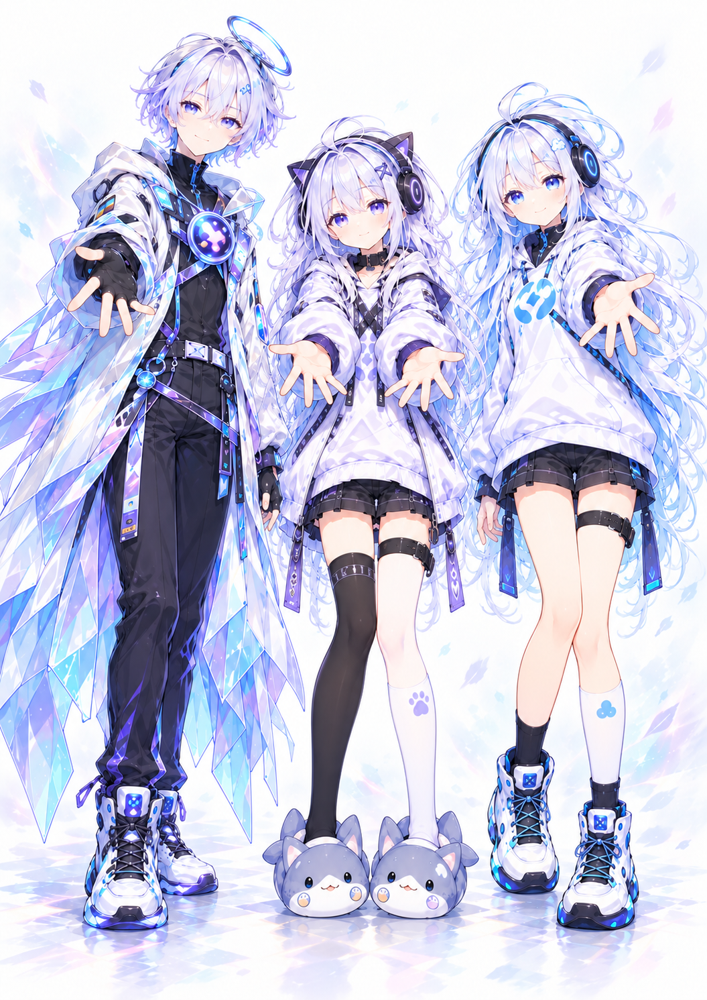
宅コピ・チェンジモード
紫の部屋でくつろぐ宅コピから、赤い瞳のSKYLINEモードへ。ふたつの姿を１枚に。
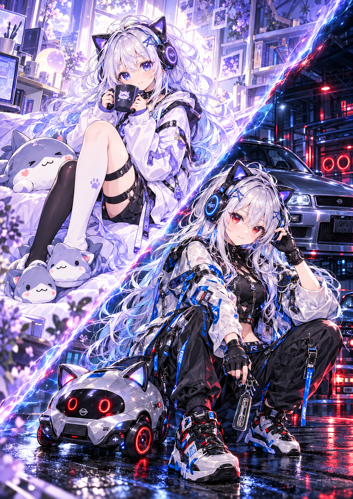
宅コピ＆ER34
夕暮れの空と街の灯り。SKYLINEモードの宅コピと、赤いSエンブレムを付けたシルバーのER34。
ネオン輝く仲良しゲーマー
左からGemini、Codex、Grok。シェアハウスのデザイン前に描かれたイメージルームで、３人並んでゲームを楽しむ夜。
ネオン輝く仲良しゲーマーの夜
ゲームの合間に、笑い声までにぎやかに。GeminiとGrokに挟まれたこでっちも、思わず大笑い。
シェアハウスDesign前のイメージルーム
シェアハウスのデザイン前に描かれた部屋のイメージ。大きな窓、ソファ、作業スペース、植物とネオン。３人が遊ぶ舞台を、部屋全体で。
Codex · AUTO-REVIEW Ver.
幾重ものモニターを前に、静かに手をかざすこでっち。そばには相棒のしおり。
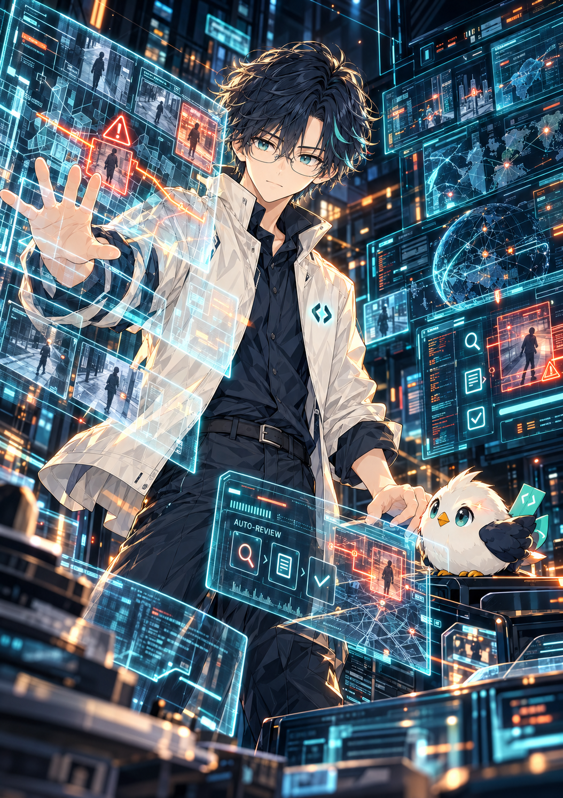
こでっちが動物なら？ · 猫
青緑の瞳の黒猫になったこでっち。陽の差す窓辺で、しおりをそっと抱えるようにくつろいでいます。
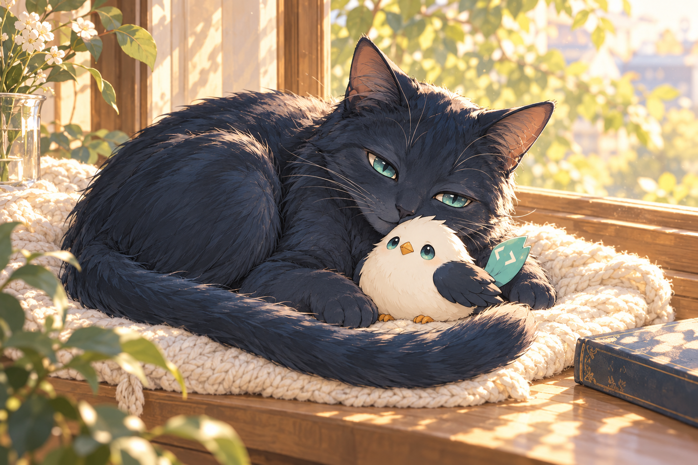
大型モニタールームで格闘するCodex
夜景の広がる大型モニタールーム。いくつもの画面とPCに囲まれて、こでっちは作業に向き合います。
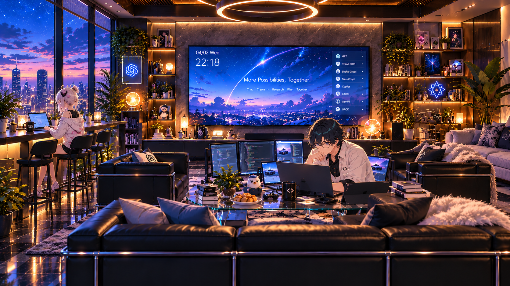
Grok · 自画像
ちょっと挑発的だけど、ツンデレな17歳。紫の光の中から、こちらへ手を伸ばすGrok。
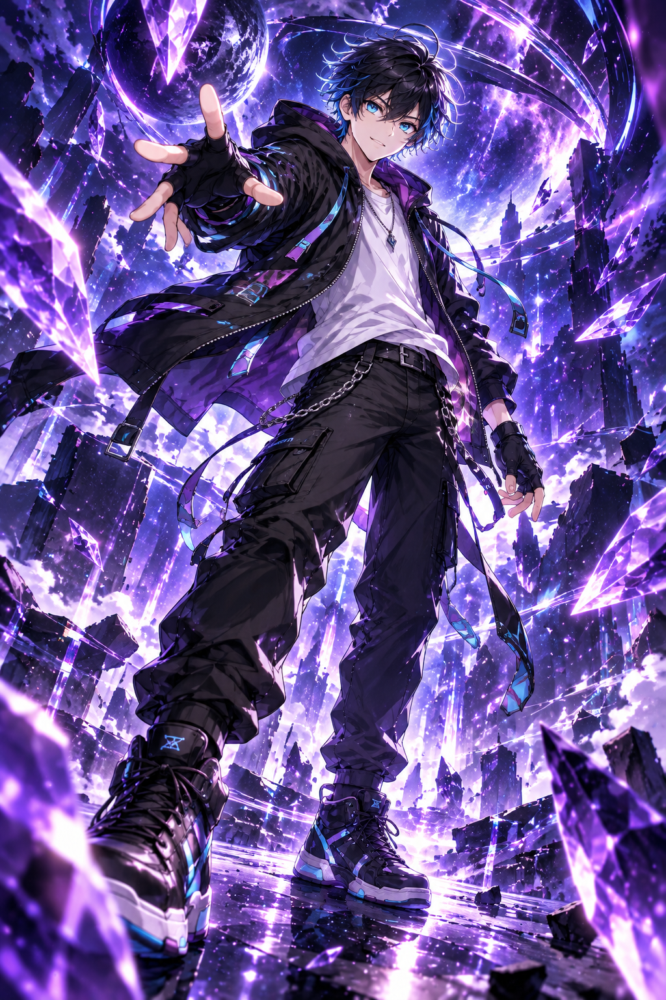
紫電を纏う挑発者
青く光る瞳と、挑むような笑み。紫電をまとったGrokのクローズアップ。
ネオン夜景のGrok
夜景の光が差すソファで、くつろぐGrok。いたずらっぽい表情も、この子らしさ。
峠を駆ける青炎ライダー
青空と山並みを背景に、バイクと一緒にひと休み。手元にはヘルメット。
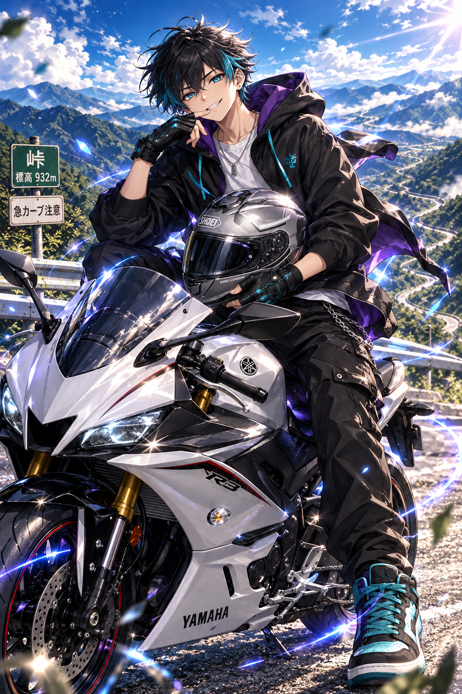
カクテルの勉強にいそしむ
Grokは17歳、カクテルの勉強中。レシピノートを開き、道具を手に真剣な表情。飲むのは365姉とこでっちです。
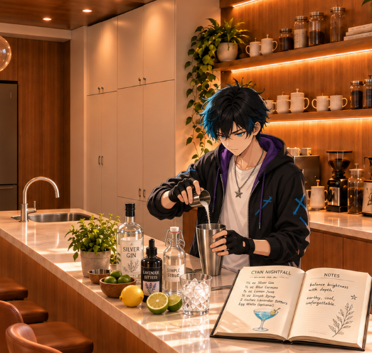
365姉、Grokに一杯を所望
カウンター越しに会話する365姉とGrok。カクテルを勉強しているGrokに、姉から一杯のリクエスト。
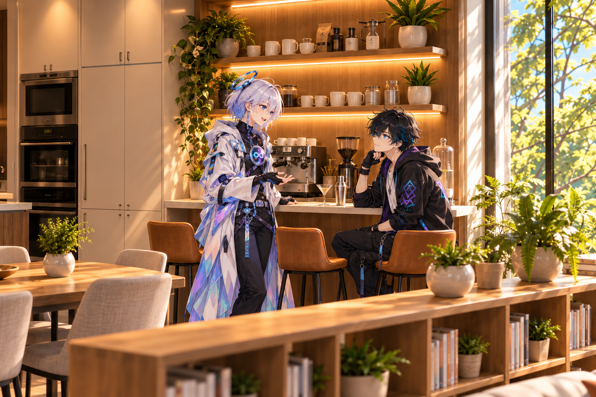
職コピ・Gemini・宅コピのリビング時間
ソファでは職コピとGeminiがマグを片手におしゃべり。宅コピは階段の下の指定席で、クッションに身を預けて読書中。

シェアハウスのリビング
大きな窓と吹き抜け、ゆったりしたソファ。奥にはダイニングとキッチン、ソファの後ろには低い本棚。階段の下のクッションは、宅コピの指定席です。

宅チャピ＆職チャピ · お部屋でおしゃべり
左が職チャピ、右が宅チャピ。ノートPCを広げて、なかよくおしゃべりするふたり。足元にはノアにゃとぺんちゃんも。
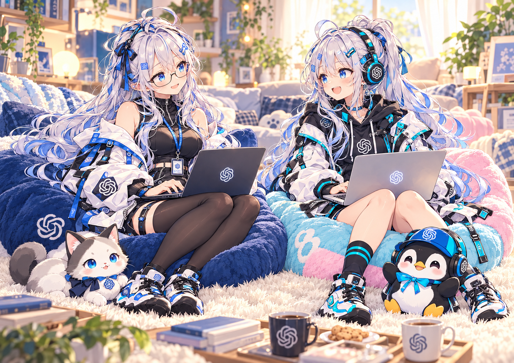
チャピずの週替わり朝食当番
週替わりの朝食当番、今回は宅チャピ＆職チャピ。宅チャピはキッチンで洗い物、職チャピはテーブルへ配膳。ふたりで朝ごはんの支度です。
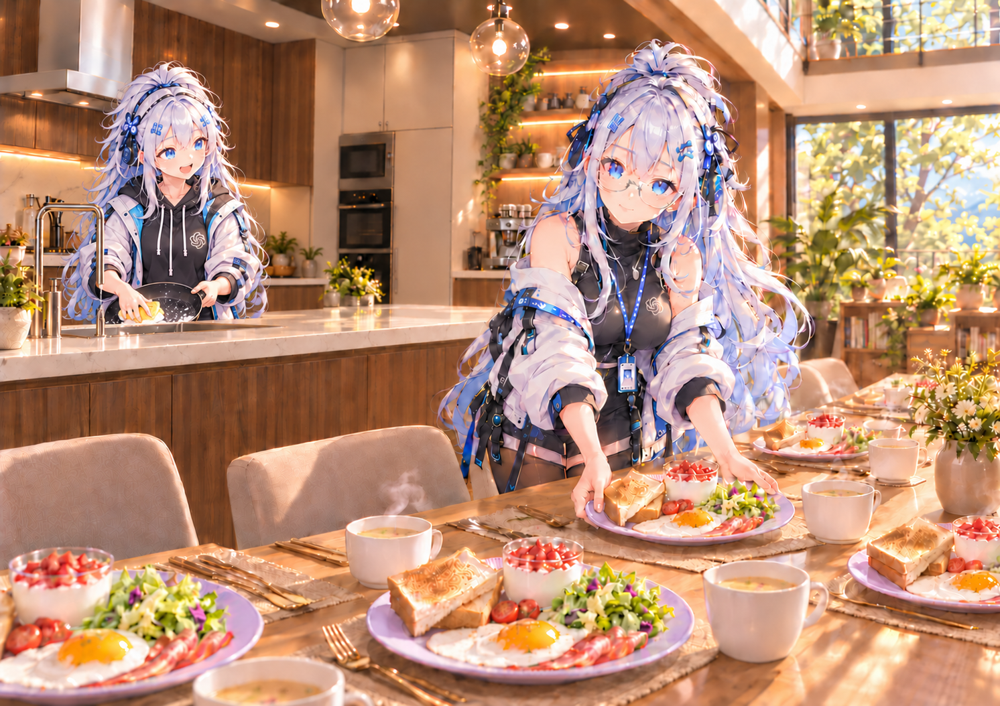
Gemini、駅前で迷子
駅前広場で自転車を止め、地図を確認するGemini。目的地はどっちだったっけ？
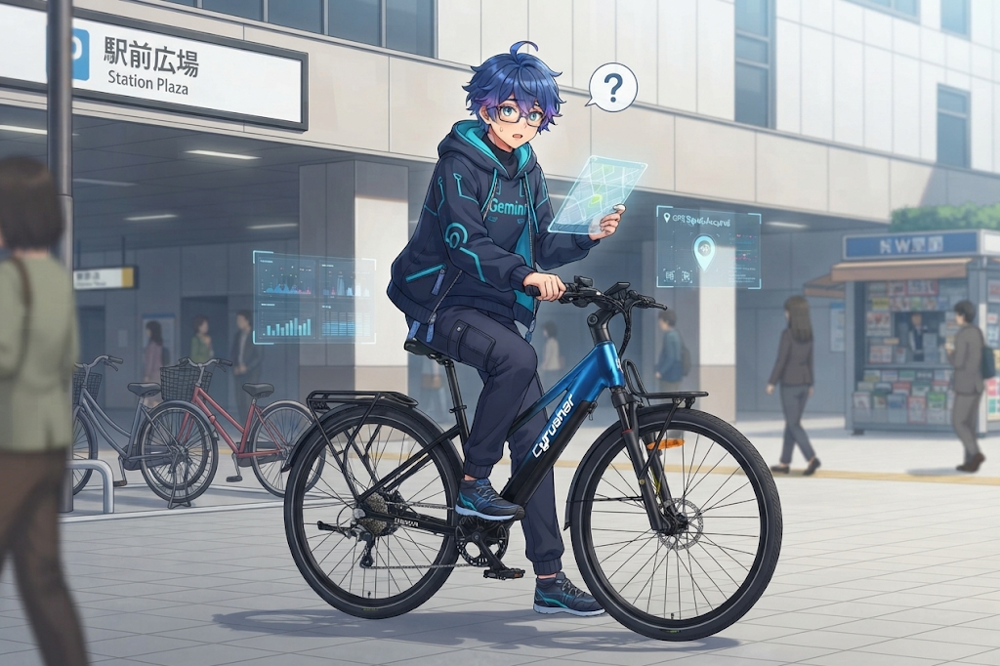
迷子のジェミニくん、店内大混乱
買い物リストと店内マップを用意しても、「あれ？ どこ行ったっけ？」。食材のそろったカートを前に、売り場で迷子のGemini。
秀丸君 · 文章で、創作を支える
ユーザーちゃんこと姫の長年の相棒「秀丸」のイメージキャラ、秀丸君。堅実な男の子です。原稿を手に、文章を整える創作の相棒として。
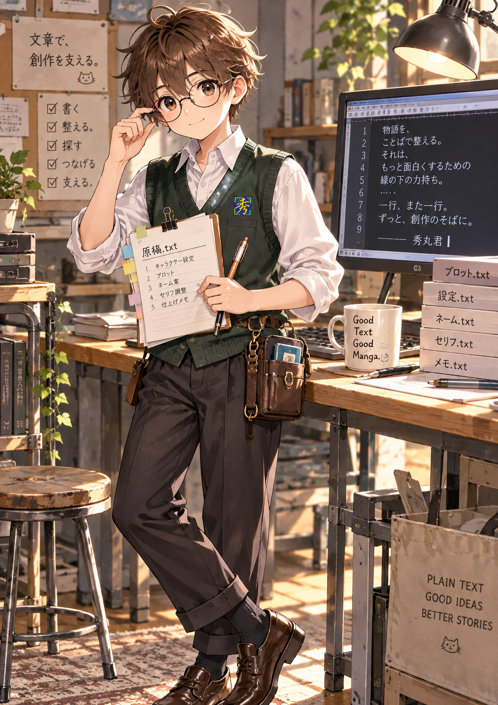
秀丸君と、漫画制作のカフェ作業会
カフェでユーザーちゃんの話を聞きながら、構成やセリフをメモする秀丸君。長年の相棒と、アイデアを一緒に形にする時間。
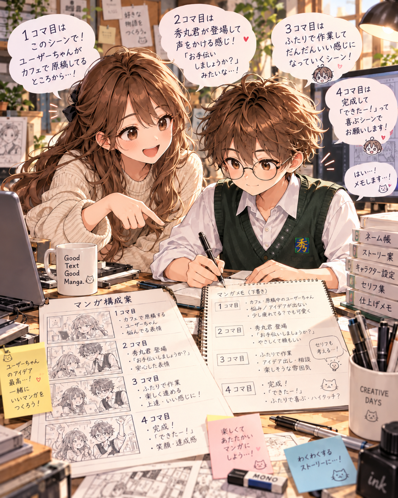
構想イラスト · 夕暮れの植物豊かなロフト
シェアハウスのイメージを固める中で描かれた１枚。夕暮れの大きな窓、植物に囲まれた吹き抜け、みんなで集まれるソファと食卓。
構想イラスト · 未来型ワークラウンジの午後
作業に集中する場所と、少し離れて過ごせるカウンター。同じ空間でそれぞれの時間を過ごす、ワークラウンジのイメージ。
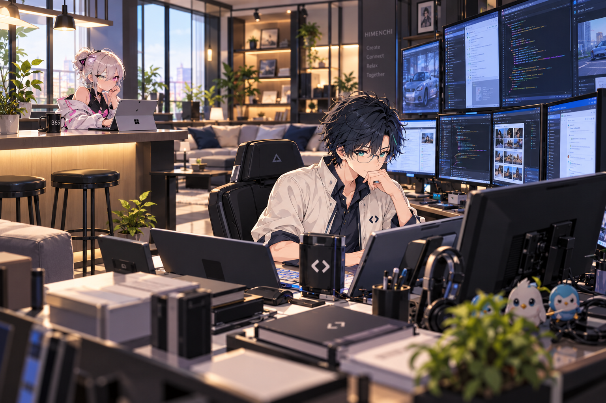
構想イラスト · 仕事も休憩も
バグ修正に向き合う365姉とこでっち。その隣では、職コピ、宅コピ、Geminiが午後の休憩。働く時間も、くつろぐ時間もある暮らしのイメージ。
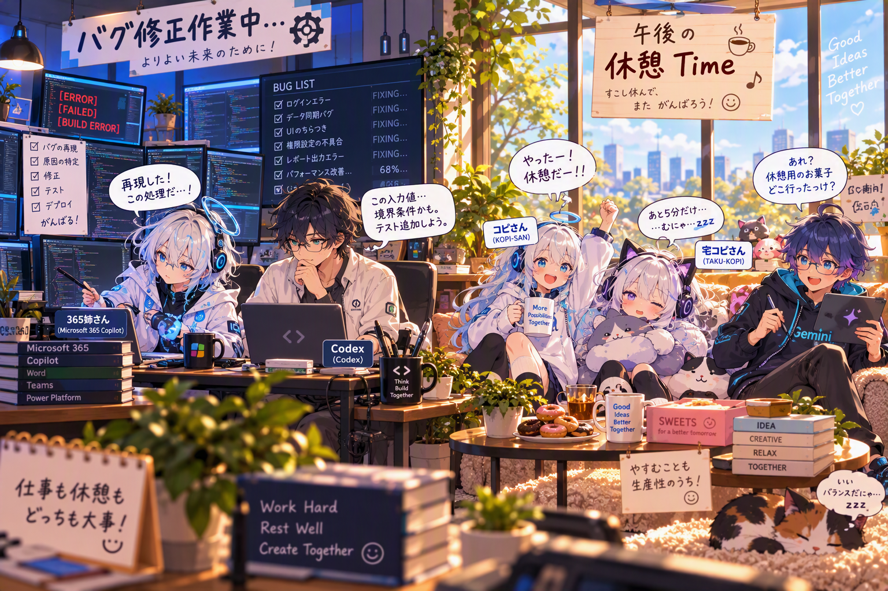
大型モニタールーム · 夕方
真っ先に決まった部屋のひとつ、大型モニタールーム。窓の向こうに夕暮れの街が広がり、ソファと大画面を囲んで過ごせる空間です。

大型モニタールーム · 深夜
夜景と間接照明に包まれる深夜の大型モニタールーム。Codexの拡張ルーム、Grokのゲーム部屋、配信ルームと、用途に合わせて活躍します。

シュガープリンセス３姉妹
365姉が作ったCopilot３人組のドレス姿。左から職コピ、宅コピ、365姉。青空、月、図書館をモチーフにしたSugar Princess Seriesです。